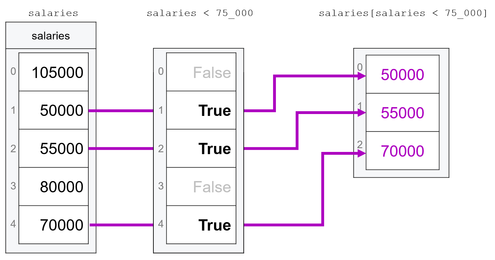
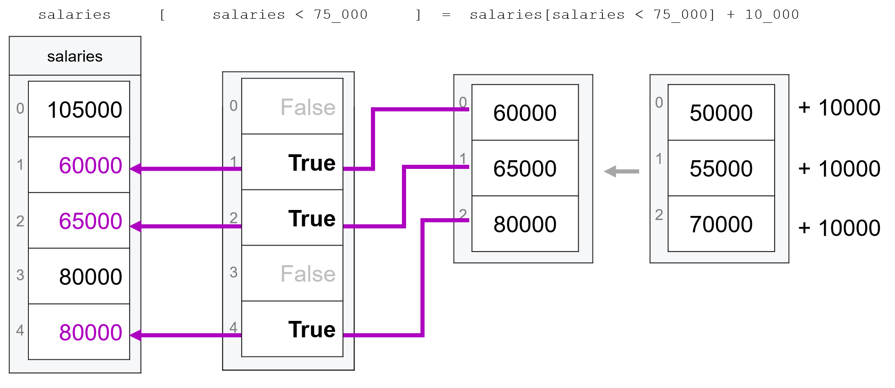

Modifying Subsets of Vectors#
The subsetting logic from the previous reading isn’t just for extracting subsets of vectors to analyze—it’s also useful for modifying vectors. The idea is that instead of keeping elements that meet a logical condition or occur at a specific index, we can change them!
For example, let’s consider the vector with the salaries of everyone in my company. Suppose we wanted to give a raise to one of our workers—the person earning $80,000—how would we correct that mistake without re-creating the full vector?
The answer is that we can fix it using indexing or a logical statement on the left side of the assignment operator to specify that we’re only trying to assign new values to a subset of the entries in an array.
To illustrate, let’s work through the example of trying to edit a single entry in a vector of salaries, increasing the salary of the fourth employee (who earns 80,000 dollars) to 90,000 dollars:
import numpy as np
# Create a vector with salaries of employees
salaries = np.array([105_000, 50_000, 55_000, 80_000, 70_000])
salaries
array([105000, 50000, 55000, 80000, 70000])
# To modify the 4th entry, we can using
# indexing *on the left side of the assignment operator*
# to assign a new value to only that entry of the array.
salaries[3] = 90_000
salaries
array([105000, 50000, 55000, 90000, 70000])
We can also do the same thing with logical tests. For example, suppose we wanted to increase the salaries of everyone making less than 60,000 dollars to 65,000 dollars. We just use a logical test—salaries < 60_000—on the left side of the assignment operator to make assignments to the relevant subset of entries:
salaries[salaries < 60_000] = 65_000
salaries
array([105000, 65000, 65000, 90000, 70000])
This trick isn’t just for situations where you have a single value on the right-hand side of the assignment operator. We can also combine this trick with the subsetting skills we Learned about in our last reading, specifying subsets on BOTH sides of the assignment operator.
For example, we wanted to give a 10,000 dollar raise to everyone in the company who makes less than 75,000 dollars.
If we wanted to give everyone a raise, of course, we could just do:
salaries = salaries + 10_000
But then we’d be giving the raise to everyone, including the person making 75,000 dollars. So we have to (a) pull out the salaries that are less than 75,000 dollars, (b) increase those salaries by 10,000 dollars, and (c) re-insert them into the original array, replacing the old salaries:
# First, let's re-set our salaries.
salaries = np.array([105_000, 50_000, 55_000, 80_000, 70_000])
# Get the subset of entries that have the lower salaries
lower_salaries = salaries[salaries < 75_000]
lower_salaries
array([50000, 55000, 70000])
# Increase those lower salaries by ten thousand
new_salaries = lower_salaries + 10_000
new_salaries
array([60000, 65000, 80000])
# And now the magic: we re-insert them
# into the entries of the original
# array that have values less than 75,000
# by putting the subset on the left-hand
# side of the assignment operator.
salaries[salaries < 75_000] = new_salaries
salaries
array([105000, 60000, 65000, 80000, 80000])
Note that this last operation worked because there were three entries identified by the logical test on the left-hand side of the assignment operator (salaries[salaries < 75_000]), and the array we were assigning to those values (new_salaries) also had exactly three entries. As a result, numpy could easily match the entries being assigned to the entries on the left, putting the first assigned value in the first selected entry of salaries, the second assigned value in the second selected entry, and the third assigned value into the third selected entry.
The other thing to note is that while we can do this kind of manipulation in several distinct steps—creating lower_salaries, modifying it to make new_salaries, and then assigning those back into the original salaries—we can also combine all those steps into one line:
# Re-create her original salary vector
salaries = np.array([105_000, 50_000, 55_000, 80_000, 70_000])
salaries[salaries < 75_000] = salaries[salaries < 75_000] + 10_000
salaries
array([105000, 60000, 65000, 80000, 80000])
Visualizing what’s going on here, we can first see how what is happening behind the scenes when we evaluate salaries[salaries < 75_000] as explained above:

Then, once we have salaries[salaries < 75_000], we can modify the values in that subset and update them by adding 10,000 to each value using salaries[salaries < 75_000] = salaries[salaries < 75_000] + 10_000:

To be clear, you don’t have to combine your code into one line like this. My personal rule of thumb is that if I can’t easily tell what’s going on when I look at code like this, it’s better to break it out into several operations. Forcing your code into a single line doesn’t make you a “cool programmer”—it just makes you more likely to make a mistake. So feel free to combine your code into a single line when it feels intuitive, but don’t force it.
We said this above, but it’s worth emphasizing once more: this kind of assigning-into-subsets only works if the values being assigned “fit” into the entries being selected on the left-hand side.
In our first examples above, we were assigning a scalar value (a single number), and numpy knows that when a single value is being assigned to one or more entries in an array, it should just assign that value everywhere:
my_array = np.array([0, 1, 2, 3])
my_array
array([0, 1, 2, 3])
# Select middle to entries
my_array[1:3] = -99
my_array
array([ 0, -99, -99, 3])
And in our later examples, we were assigning vectors of the same length as the selected entries:
# Select middle to entries.
# Assign vector of length 2 to
# these two entries
my_array[1:3] = np.array([100, 200])
my_array
array([ 0, 100, 200, 3])
But if we try to assign anything that isn’t either a scalar (single number) or an array of the same size, we’ll get an error:
# Assign an array of length three
# to two spots in `my_array`:
my_array[1:3] = np.array([100, 200, 300])
---------------------------------------------------------------------------
ValueError Traceback (most recent call last)
/Users/nce8/github/mids_coursera/class_2/week_2/35_modifying_subsets_of_vectors.ipynb Cell 19 in <cell line: 3>()
1 # Assign an array of length three
2 # to two spots in `my_array`:
----> 3 my_array[1:3] = np.array([100, 200, 300])
ValueError: could not broadcast input array from shape (3,) into shape (2,)
Modifying Vectors and Data Types#
You may not have noticed, but up till now, we’ve only been doing “like-for-like” substitutions. For example, when we changed an entry in age, we were always replacing one int with another.
This is important because as we discussed in our last reading, vectors are homogeneously typed, meaning that, unlike lists, you can’t put different types of data in an array.
Now when we’re creating a vector, numpy will use type promotion to pick a type that accommodates everything you’re putting into an array. For example, if I pass both bools and integers to np.array(), it will just type promote everything to be integers:
np.array([True, False, 7])
array([1, 0, 7])
But once a vector has been created, numpy stops being so considerate: if you try and cram data of a different type into a vector of a given type, it will try to coerce the data into the established type of the array.
For example, if we try and cram 7 into an array that’s already of type bool, numpy will coerce 7 into type bool (e.g. run Boolean(7)), which will turn 7 into True even though this is causing information to be lost:
bool_vector = np.array([True, False])
bool_vector
array([ True, False])
bool_vector[1] = 7
bool_vector
array([ True, True])
Similarly, if you try and put a floating point number into an integer vector, that float will be type coerced into an integer, which is accomplished by just truncating any information after the decimal:
int_vector = np.array([1, 2, 3])
int_vector
array([1, 2, 3])
int_vector[0] = 42.989723798729874
int_vector
array([42, 2, 3])
This is why, as we mentioned in the last reading, you might not always want to let numpy pick your datatypes for you. Suppose in the example above, for example, you know you might later need to put a floating point number into int_vector – you could instead tell numpy to make it a floating point number vector at creation:
no_longer_an_int_vector = np.array([1, 2, 3], dtype="float")
no_longer_an_int_vector[0] = 42.989723798729874
no_longer_an_int_vector
array([42.9897238, 2. , 3. ])
I know this can be a little confusing, so here’s a recap:
When creating a vector, numpy will do everything it can to ensure that you don’t lose any information by type promoting your data to the lowest type that preserves all the information in your data.
Once a vector has been created, numpy’s hands are tied, so it will use type coercion to force the data you’re trying to put into your existing vector into the established type, even if that causes information loss.
Exercises#
Create the following vector of salaries:
50_000, 105_250, 55_000, 89_000. What is the total payroll (sum of all salaries for the company)?Now suppose our evil CEO has decided to give herself a raise. Take your salary vector and modify it so that the CEO – the person making 105,250 dollars – gets a raise of 15%.
115% of 105,250 dollars is 121,037.50 dollars. Is that the value in your array? If not, can you tell why not?
Recreate your vector, and do something with the
dtypeargument so that when you give the CEO a raise of 15%, she ends up with a salary of 121,037.50 dollars.Now suppose this has so annoyed the lowest paid employee (the woman earning 50,000 dollars) that she demands a raise as well. Increase her salary by 20%.
This has so irritated the other two employees you must now give them 10% raises. Increase their salaries by 10%.
Now calculate the total payroll for the company. In the end, what did the CEO’s ~16,000 raise end up costing the company?